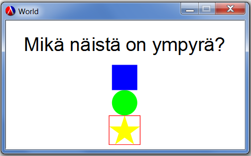
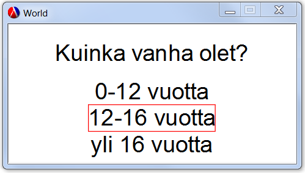

6.12
6.1 Display-Read-funktiot
procedure
(display-read info) → merkkijono
info : merkkijono/kuva/luku
Avaa animaatioikkunan, ja näyttää käyttäjälle annetun info:n sekä editorikentän. Kun käyttäjä painaa <enter> palautetaan editorin
sisältö (merkkijono). Jos editori jätetään tyhjäksi palautuu tyhjä merkkijono "".
Esimerkkejä:
(display-read "Mikä on nimesi?")
(display-read (above (text "Mikä on kuvassa?" 30 "blue")(circle 40 "solid" "red")))
procedure
(display-read-number info) → luku/false
info : merkkijono/kuva/luku
Avaa animaatioikkunan, ja näyttää käyttäjälle annetun info:n sekä editorikentän. Kun käyttäjä painaa <enter> palautetaan editorin
sisältö (luku). Jos editori eri sisällä lukua (tai se on tyhjä) palautuu #false.
Esimerkkejä:
(display-read-number "Mikä on ikäsi?")
procedure
(display-select info valinnat) → merkkijono/kuva/luku
info : merkkijono/kuva/luku valinnat : lista<merkkijono/kuva/luku>
Avaa animaatioikkunan, ja näyttää käyttäjälle annetun info:n sekä valinnat-listan sisällön. valinnat-listan ensimmäinen
alkio on automaattisesti valittuna ja käyttäjä voi muokata valintaa nuoli-ylös ja nuoli-alas näppäimillä. Kun käyttäjä painaa <enter>
palautetaan valinta. Valitun alkion tyyppi säilyy, eli jos annettu valinnat-lista sisältää numeroita, display-select palauttaa
myös numeroita. Jos valinta epäonnistuu (esim. annettu lista sisältää jotain muuta kuin merkkijonoja/kuvia/lukuja), palautetaan
tyhjälista empty.
Esimerkki:
(display-select "Mikä näistä on ympyrä?" (list (square 40 "solid" "blue") (circle 20 "solid" "green") (star 30 "solid" "yellow")))

(display-select "Kuinka vanha olet?" (list "0-12 vuotta" "12-16 vuotta" "yli 16 vuotta"))

procedure
(display-value info arvo) → merkkijono/kuva/luku
info : merkkijono/kuva/luku arvo : merkkijono/kuva/luku
Avaa animaatioikkunan, ja näyttää käyttäjälle annetun info:n sekä arvo:n. Kun käyttäjä painaa <enter>
palautetaan arvo. Jos arvoa ei voida esittää käyttäjälle (esim. se on jotain muuta kuin merkkijono/kuva/luku) näytetään
vain info mutta arvo palautetaan normaalisti.
(display-value "Pistemääräsi:" 20)
procedure
(display-info info) → merkkijono/kuva/luku
info : merkkijono/kuva/luku
Avaa animaatioikkunan, ja näyttää käyttäjälle annetun info:n. Kun käyttäjä painaa <enter>
palautetaan info.
(display-info "Game over")
procedure
(display-info-timer info timer) → merkkijono/kuva/luku
info : merkkijono/kuva/luku timer : luku
Avaa animaatioikkunan, ja näyttää käyttäjälle annetun info:n, ja sulkeutuu automaattisesti kun timer on kulunut
(28 vastaa yhtä sekuntia) tai kun käyttäjä painaa <enter>. Palauttaan info:n.
(display-info-timer "Game over" 100)